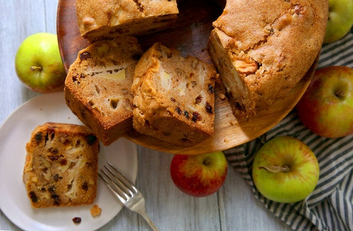

Apple Cake

In a modern world of Cinnamon Hot Pockets and Pecan Pie Pringles, apple-picking is one of the few agricultural rituals we can all still get our hands into. This cake — a classic from 1973 — is a godsend to anyone who has overloaded at the pick-your-own orchard or overbought at the farmers’ market. Like many simple cakes, this one uses neutral oil that lets the fruit flavor come through, rather than show-offy butter.
- Butter for greasing pan
3 cupsflour, plus more for dusting pan1½ cupsvegetable oil1½ cupssugar3large eggs1 tspsalt1 tspcinnamon2 tspbaking soda1-2 tspvanilla extract3 cupspeeled, cored and thickly sliced tart apples, like Honeycrisp or Granny Smith1 cupchopped walnuts1 cupraisins- Vanilla ice cream (optional)
Preheat oven to 350 degrees. Butter and flour a 9-inch tube pan or normal pan. Beat the oil and sugar together in a mixer (fitted with a paddle attachment) while assembling the remaining ingredients. After about 5 minutes, add the eggs and beat until the mixture is creamy.
Sift together 3 cups of flour, the salt, cinnamon and baking soda. Stir into the batter. Add the vanilla, apples, walnuts and raisins and stir until combined.
Transfer the mixture to the prepared pan. Bake for 1 hour and 5 minutes, or until a toothpick inserted in the center comes out clean. Cool in the pan before turning out. Serve at room temperature with vanilla ice cream, if desired.